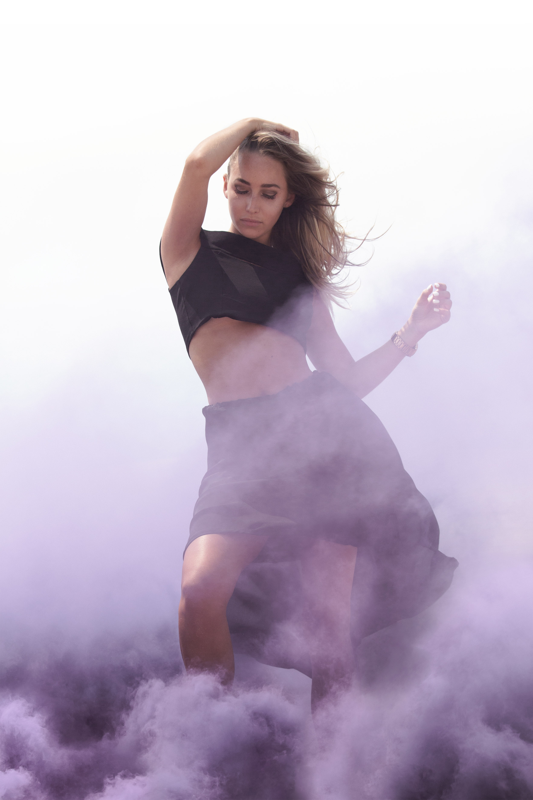
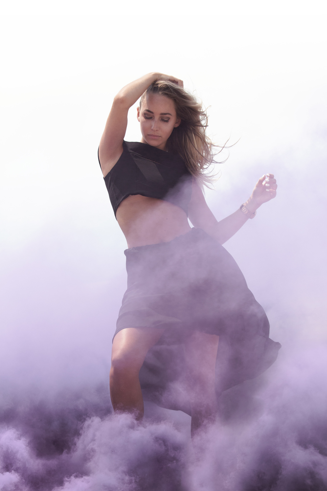

v.2.3

hey there.
I’m Eric, a UX designer and front-end web developer. My fascination with how design impacts others is what drives me to create empowering user experiences.
Mobell Service
Improving accessibility, from hackathon idea to product
Mobell aims to make society more inclusive to people with disabilities and, as a result, make greater independence accessible to all. This service suite for businesses and their customers was conceived during the 2019 Camp PolyHacks Hackathon, winning 1st Place and “Best Use of Satellite Technology by Northrop Grumman”.

BoltAbout Dashboard
Streamlining the employee UX via Lean/6σ methodologies
Driven by a pursuit of constant improvement, my team and I were tasked with identifying inefficiencies to streamline BoltAbout’s internal processes. This work utilized Lean/Six Sigma and UX Design methodologies to implement changes that not only drastically improve the employee experience, but also continue to save the company money.
Cal Poly Events App
Facilitating event discovery via research & design
The end goal for this project was to re-envision Cal Poly’s brand in an authentic and modern way by incorporating Material Design language in conjunction with user research and Cal Poly’s branding guidelines. This work and its associated insights were later used for inspiration by the Cal Poly app design team for development of their redesigned student application.
have an
extra minute?
Keep scrolling to read about my design journey and process. When I’m not designing an interface, I’ve got my hands on a camera and some design tools.

 

Where I Began
My love for technology and design began with making art like this. This passion now drives my UX design work.


Creating Imagery for Designs
Each piece of digital art is original, meaning every element comes from my trusty camera.

Editing Photo Shoots
Handcrafted color profiles for each shoot ensure that a client’s photos feel coherent, yet unique.


How I Use These Skills
Creating digital art taught me the foundational skills needed to design visually appealing user interfaces.